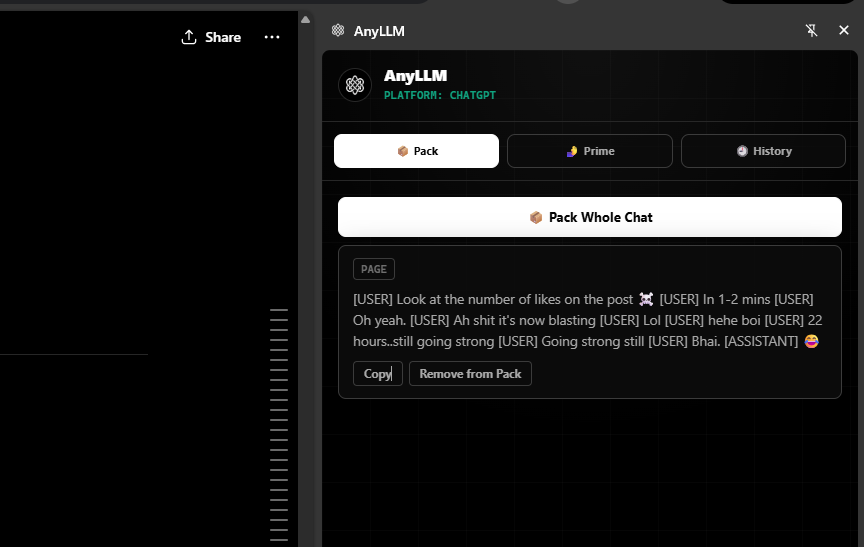
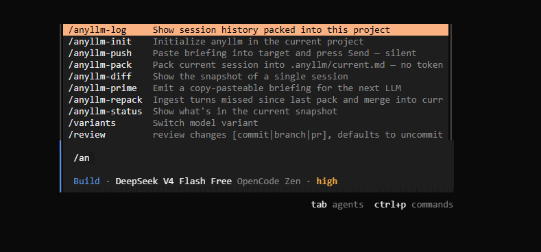

Credits Exhausted
API quota or subscription caps hit — in the browser or the terminal. You switch tools, but the built-up context is gone.
Every AI conversation ends somewhere — quota runs out, the tab closes, you switch tools. AnyLLM snapshots what happened and hands it to whatever comes next.
A browser extension carries context between Claude.ai, ChatGPT and Gemini. A CLI carries it between Claude Code, Codex and Agy. Same idea, two front doors.
# in the browser — Claude.ai, ChatGPT, Gemini
› Pack → Prime
# in the terminal — Claude Code, Codex, Agy
$ pip install anyllm-ctx
$ anyllm install
> /anyllm-pack
packed → .anyllm/current.md (58 turns)
The Problem
You build up context across dozens of AI turns — in a chat tab or a coding agent. Then one of these happens, and the next tool needs the whole thing explained again.
API quota or subscription caps hit — in the browser or the terminal. You switch tools, but the built-up context is gone.
The model starts forgetting earlier decisions. A fresh session — or a fresh tab — doesn't know what happened.
ChatGPT to Claude. Claude Code to Codex. Every switch means re-explaining decisions and failed attempts from scratch.
You pick up work the next day. Yesterday's chat or coding session is gone — you're re-explaining the project to yourself through a model.
One Format, Two Surfaces
Pick the surface that matches where the conversation actually lives. The context underneath is the same idea either way.
A browser extension that docks beside the conversation itself. Pack, prime, and push — without leaving Claude.ai, ChatGPT, or Gemini.
Works with: Claude.ai · ChatGPT · Gemini
A Python CLI that snapshots a dying coding session and primes the next model in 30 seconds — as a slash command inside your agent.
Works with: Claude Code · Codex · Agy (+ Kiro, Kilocode, OpenCode, Cursor)
AnyLLM for Chat
Works inside the tab you're already in. Click the toolbar icon and a side panel docks beside the conversation — nothing is injected on top of the page, and everything stays local to your machine.

📦 Pack
Hover any message and click 📦, or pack the entire chat in one click. Everything you keep lands in the Pack tab.
Prime
Extract decisions, next steps, and code from the thread into one structured briefing, ready to paste.
Claude · ChatGPT · Gemini
Copy the briefing, or send it straight into a fresh tab on another platform — it's typed in for you.
Copy the briefing to your clipboard, or open Claude, ChatGPT, or Gemini in a new tab with the prompt already injected.
Every extraction is kept — the last 20 per conversation — timestamped and re-copyable, so an earlier briefing is never lost.
Packs, highlights, and history live in chrome.storage on your machine. No server, no account, no telemetry.
📦 Add to Pack
✎ Edit locally
🗑 Hide locally
🖍 Highlight selection
Adapter reads Claude's message DOM to pack, edit, and highlight in place.
Works on both chat.openai.com and chatgpt.com.
Same panel, same feature set — the adapter layer normalises each platform's DOM.
npm install
npm run build
chrome://extensions → Load unpacked → dist/
AnyLLM for Code
Install once, and /anyllm-pack works inside every AI coding tool you use — without leaving your session.

anyllm install — all 8 commands, autocompleting inside your coding agent.anyllm install
Detects which AI coding CLIs you have installed and wires up slash commands in all of them at once.
/anyllm-pack
Distills your session into a structured snapshot with decisions, failed paths, and what's next. Merges into rolling project memory.
/anyllm-prime
Copies a briefing to the clipboard. Paste it into any model — ChatGPT, Claude, Gemini — and continue without re-explaining.
Integrations
Built around three core agents — Claude Code, Codex, Agy — plus four more anyllm install already knows how to wire up.
/anyllm-pack
Slash commands run directly in the shell — no AI call, no tokens consumed. The fastest integration.
$anyllm-pack
Uses Codex's $command prefix. Skills are installed globally in ~/.codex/prompts/.
anyllm-pack
Skills are installed in ~/.gemini/config/skills/. Type the name as a plain message — no slash prefix.
/anyllm-pack
Installed as steering documents in ~/.kiro/steering/. Kiro reads them as persistent agent instructions.
/anyllm-pack
Claude Code-compatible format. Commands run directly in the shell — no tokens used.
/anyllm-pack
Installed in ~/.config/opencode/commands/ or project-local .opencode/commands/.
/anyllm-pack
Installed as a skill directory in ~/.cursor/skills-cursor/.
/anyllm-init
/anyllm-pack
/anyllm-repack
/anyllm-prime
/anyllm-push
/anyllm-status
/anyllm-log
/anyllm-diff
Every pack merges into current.md — not overwrites it. Decisions from three sessions ago survive even if today's session never mentioned them.
Each decision is classified CONFIRMED, STALE, or ORPHANED across sessions. The receiving model knows exactly what to trust and what to verify.
Move context from Claude Code to Codex to Agy — same briefing, same project memory, no ecosystem lock-in.
/anyllm-repack ingests only turns since the last pack. Use it mid-session to update context without reprocessing the full history.
Failed paths accumulate across all sessions. Every future model knows what was tried and failed — so it doesn't try again.
No cloud, no database, no telemetry. Transcripts and snapshots are plain files on disk. Commit .anyllm/ to your repo.
Comparison
The market is full of memory systems for app developers. AnyLLM is for developers actively moving a task between AI tools — chat or code.
| Tool | Audience | Cross-tool | Slash commands | Rolling memory | Open source |
|---|---|---|---|---|---|
| mem0 | App developers | No | No | Yes | Yes |
| Letta / MemGPT | App developers | No | No | Yes | Yes |
| Pieces | End-user devs | Some | No | No | No |
| Claude MEMORY.md | Claude only | No | No | Manual | N/A |
| Cursor Rules | Cursor only | No | No | Manual | N/A |
| AnyLLM CLI | End-user devs | 7 tools | Yes | Yes | Yes |
| AnyLLM Extension | End-user devs | 3 platforms | N/A | Local pack + history | Yes |
The .anyllm Format
Versioned markdown keeps context inspectable, diff-friendly, and easy for other tools to build on. This powers the CLI's rolling memory — the extension keeps its own packs, highlights, and history in chrome.storage.
.anyllm/ belongs in your repo alongside the code.--- anyllm_version: 0.1 project: myapp merged_from: [session-a, session-b] confidence_report: confirmed: 4 stale: 1 --- ## Task Build a multi-agent orchestration layer. ## Decisions - [CONFIRMED] Use SQLite for state — auth/store.py - [CONFIRMED] Event sourcing over CRUD — core/events.py - [NEW] Retry budget capped per-tool, not global ## Failed Approaches - Redis for state. Overkill. Do not redo. - Polling loop for tool results. Use callbacks. ## Stale / Needs Verification - [STALE] Tool registry auto-discovers plugins ## Next Step Implement persistence layer in store.py.
Two surfaces, one format. Add the extension to your browser, install the CLI in your terminal, or both.